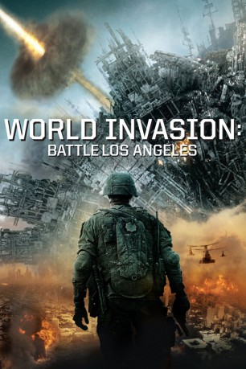
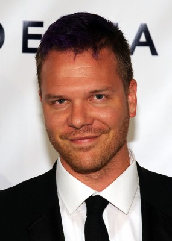
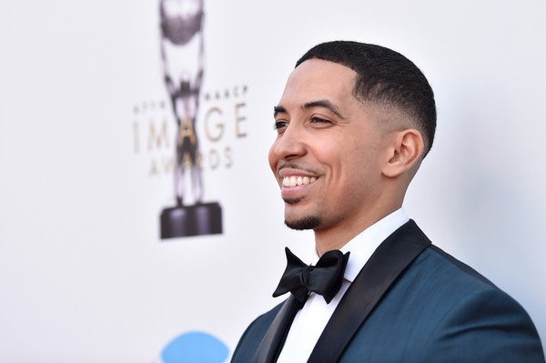
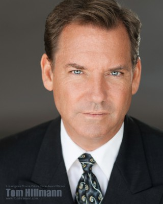
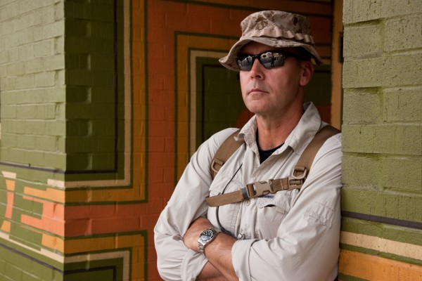
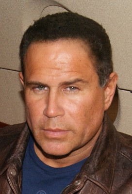
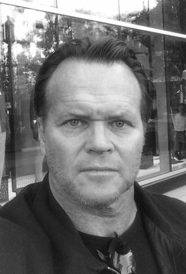

#6228 World Invasion: Battle Los Angeles
Alternativ: Battle Los Angeles
 
 IMDB-Wertung: 5.8 / 10
IMDB-Wertung: 5.8 / 10  Metascore: 0
Metascore: 0 
Seit Jahren werden überall auf der Welt immer wieder UFO-Sichtungen gemeldet – in Buenos Aires, Seoul, Frankreich, Deutschland, China. Aber 2011 wird aus diesen Beobachtungen eine furchteinflößende Gefahr: Die Erde wird auf einmal von unbekannten Streitmächten angegriffen. Während die Menschen weltweit machtlos mit ansehen müssen, wie ihre Städte dieser Invasion zum Opfer fallen, wird Los Angeles der letzte Zufluchtsort der Menschheit in einem Krieg, den keiner sich vorzustellen wagte. Ein Marine-Unteroffizier und seine Truppe haben den Auftrag, eine letzte Verteidigungslinie zu errichten und sich dem Kampf gegen den übermächtigen Feind zu stellen. Ein Feind, wie er ihnen noch nie zuvor begegnet ist …
Jahr: 2011
Dauer: 116 Minuten
FSK: 16
Land: USA Studio: Columbia PicturesTonspuren: DTS - ,
Untertitel: Deutsch,
Auflösung: 1080p (1920x804) Größe: 13209 MB
Genre: Action, Sci-Fi
Regisseur: Jonathan Liebesman
Drehbuch: David Loughery
Soundtrack:
Darsteller:
 Aaron Eckhart als Ssgt. Michael Nantz
Aaron Eckhart als Ssgt. Michael Nantz- Ramon Rodriguez als 2nd Lt. William Martinez
 Will Rothhaar als Cpl. Lee Imlay
Will Rothhaar als Cpl. Lee Imlay Cory Hardrict als Cpl. Jason Lockett
Cory Hardrict als Cpl. Jason Lockett-  Jim Parrack als LCpl. Peter Kerns
- Gino Anthony Pesi als Cpl. Nick Stavrou
- Ne-Yo als Cpl. Kevin Harris
 James Hiroyuki Liao als LCpl. Steven Mottola
James Hiroyuki Liao als LCpl. Steven Mottola- Bridget Moynahan als Michele
- Noel Fisher als Pfc. Shaun Lenihan
- Adetokumboh M'Cormack als Corpsman Jibril Adukwu
- Bryce Cass als Hector Rincon
- Michael Peña als Joe Rincon
 Michelle Rodriguez als TSgt. Elena Santos
Michelle Rodriguez als TSgt. Elena Santos-  Neil Brown Jr. als LCpl. Richard Guerrero
- Taylor Handley als LCpl. Corey Simmons
- Joey King als Kirsten
 Lucas Till als Cpl. Scott Grayston
Lucas Till als Cpl. Scott Grayston- Jadin Gould als Amy
 Joe Chrest als 1st Sgt. John Roy
Joe Chrest als 1st Sgt. John Roy E. Roger Mitchell als Company Captain
E. Roger Mitchell als Company Captain- Rus Blackwell als Lt. Col. K.N. Ritchie
- Susie Abromeit als Amanda
- Beth Keener als Kathy Martinez
 David Jensen als Psychiatrist
David Jensen als Psychiatrist- Stacey Turner als Reporter on TV
-  Tom Hillmann als Reporter on TV
- Nzinga Blake als Adukwu's Sister
- Taryn Southern als Reporter on Beach
-  James D. Dever als Sgt. Major
- Ava Bogle als Beach Girl 1 , uncredited
- Nick Jones Jr. als Marine , uncredited
- Philip Lawrence als U.S. Marine , uncredited
-  Keith Middlebrook als Steve Johinson , uncredited
- Courtney Munch als Marine Crew Chief , uncredited
-  Jim Palmer als Crew Chief , uncredited
- Michelle Pierce als Shelly , uncredited
 Philippe Radelet als Civilian , uncredited
Philippe Radelet als Civilian , uncredited Vanessa Ross als Terrified Pedestrian , uncredited
Vanessa Ross als Terrified Pedestrian , uncredited- David Speed als Gary , uncredited
- Michael Wozniak als Beach Dude , uncredited
- Marlon Young als Sergeant Major , uncredited
- Kenneth Brown Jr. als Cpl. Richard Oswald
- Brandi Gerard als Cherise
- Jessica Heap als Jessy
- Lena Clark als Chris
- Jamie Norwood als Flower Shop Employee
- Todd Cochran als Command Hangar Marine
- Alex Aristidis als Beach Goer , uncredited
 Charlotte Biggs als Emergency Medical Tech. , uncredited
Charlotte Biggs als Emergency Medical Tech. , uncredited
Datei: X:\2011(N-Z)\World Invasion Battle Los Angeles (2011, FSK16, 1920x804).mkv seit 18.05.2017
Festplatte: HD 2011(G-Z)
 Es gibt insgesamt 132 Filme in der Gruppe '2011(N-Z)'
Es gibt insgesamt 132 Filme in der Gruppe '2011(N-Z)'